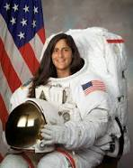

The term astronaut is a combination of two Greek words: astron (star) and nautes (sailor). Thus, astronauts are those who sail among the stars.
An astronaut is a person trained to operate in space and to command, pilot, or serve as a crew member of a spacecraft. As of 2016, a total of 552 people from 36 countries have reached 100 km or more in altitude
The first human in space was Soviet Yuri Gagarin, who was launched on April 12, 1961, aboard Vostok 1 and orbited around the Earth for 108 minutes. The first woman in space was Soviet Valentina Tereshkova, who launched on June 16, 1963, aboard Vostok 6 and orbited Earth for almost three days.
National Aeronautics and Space Administration (“NASA”) is the premier space exploration agency. NASA astronauts go through twenty months of training in a variety of areas to get themselves ready for space.
Astronauts are susceptible to a variety of health risks including decompression sickness, immunodeficiencies, loss of bone and muscle, loss of eyesight, orthostatic intolerance, sleep disturbances, and radiation.
| KALPANA CHAWALA | RAKESH SHARAMA | SUNITA WILLIAMS | |
|
|
 | |
| It’s been 14 years since her passing, but Indo-American astronaut, Kalpana Chawla continues to be an inspirational force for youth all-over, especially girls. Born in Karnal-Punjab, Kalpana overcame all odds and fulfilled her dream of reaching for the stars. On her death anniversary today, we share a few details about Chawla’s incredible journey. Early life: Kalpana was born on March 17, 1962, in Karnal, Haryana. Born into a middle-class family, she completed her schooling from Tagore Baal Niketan Senior Secondary School, Karnal and her B.Tech in Aeronautical Engineering from Punjab Engineering College at Chandigarh, India in 1982. Life in the US: To fulfil her desire of becoming an astronaut, Kalpana aimed to join NASA and moved to the United States in 1982. She obtained a Master’s degree in Aerospace Engineering from the University of Texas at Arlington in 1984 and a second Master’s in 1986. She then earned a doctorate in aerospace engineering from the University of Colorado at Boulder. Wedding bells: There’s always time for romance. In 1983, Kalpana tied the knot with Jean-Pierre Harrison, a flying instructor and an aviation author. Work at NASA: In 1988, Kalpana’s dream of joining NASA finally came true. She was offered the position of Vice President of Overset Methods, Inc at NASA Research Center and was later assigned to do Computational fluid dynamics (CFD) research on Vertical/Short Takeoff and Landing concepts. Taking flight: Kalpana was certified with a commercial pilot license for seaplanes, multi-engine aircraft and glider. She was also a certified flight Instructor for glider and airplanes. US Citizenship and continuation at NASA: On acquiring US citizenship in 1991, Kalpana Chawla applied for the NASA Astronaut Corps. She joined the Corps in March 1995 and was selected for her first flight in 1996. First mission: Kalpana’s first space mission began on November 19, 1997. She was part of the six-astronaut crew that flew the Space Shuttle Columbia flight STS-87. Not only was Chawla the first Indian-born woman to fly in space, but also the second Indian do so. During her first mission, Kalpana travelled over 10.4 million miles in 252 orbits of the earth, logging more than 372 hours in space. Second mission: In 2000, Kalpana was selected for her second flight as part of the crew of STS-107. However, the mission was repeatedly delayed due to scheduling conflicts and technical problems, such as the July 2002 discovery of cracks in the shuttle engine flow liners. On January 16, 2003, Chawla finally returned to space aboard Space Shuttle Columbia on the ill-fated STS-107 mission. Her responsibilities included the microgravity experiments, for which the crew conducted nearly 80 experiments studying earth and space science, advanced technology development, and astronaut health and safety. Death: On February 1, 2003, Kalpana died in space along with seven crew members in the Space Shuttle Columbia disaster. The tragedy occurred when the Space Shuttle disintegrated over Texas during its re-entry into the earth’s atmosphere. Awards and honours: During the course of her career, Kalpana received the Congressional Space Medal of Honor, NASA Space Flight Medal and NASA Distinguished Service Medal. Following her death, the Prime Minister of India announced that the meteorological series of satellites, MetSat, was to be renamed ‘Kalpana’ in 2003. The first satellite of the series, ‘MetSat-1’, launched by India on September 12, 2002 was renamed ‘Kalpana-1’. Meanwhile, The Kalpana Chawla Award was instituted by the Government of Karnataka in 2004 to recognise young women scientists. NASA on the other hand has dedicated a supercomputer to the memory of Kalpana Chawla. | Career[edit] An alumnus of the 35th National Defence Academy, Rakesh Sharma joined as a test pilot in the Indian Air Force in 1970. He flew various aircraft like Mikoyan-Gurevich (MiG) aircraft starting from 1971. Rakesh Sharma swiftly progressed through many levels and in 1984 he was appointed as the Squadron Leader and pilot of the Indian Air Force.[3] He was selected on the twentieth of September in 1982 to become a cosmonaut and go into space as part of a joint program between the Indian Space Research Organisation (ISRO) and the Soviet Intercosmos space program.[4] In 1984, he became the first Indian citizen to enter space when he flew aboard the Soviet rocket Soyuz T-11 launched from Baikonur Cosmodrome in Kazakh Soviet Socialist Republic on the second of April 1984. The Soyuz T-11 docked and transferred the three member Soviet-Indian international crew which also included the ship's Commander Yury Malyshev and Flight Engineer Gennadi Strekalov (USSR) to the Salyut 7 Orbital Station. Sharma spent 7 days 21 hours and 40 minutes aboard the Salyut 7 during which his team conducted scientific and technical studies which included 43 experimental sessions. His work was mainly in the fields of bio-medicine and remote sensing.[4] The crew held a joint television news conference with officials in Moscow and then Indian Prime Minister Indira Gandhi. When Indira Gandhi asked Sharma how India looked from outer space, he replied Saare Jahan Se Achcha (the best in the world). This is the title of a patriotic poem by Iqbal that had been written when India was under British colonial rule, that continues to be popular today. India became the 14th nation to send a man to outer space.[4] He retired with the rank of wing commander. He joined the Hindustan Aeronautics Limited in 1987 and served as Chief Test Pilot in the HAL Nashik Division until 1992, before moving on to Bangalore to work as the Chief Test Pilot of HAL. He was also associated with the Light Combat Aircraft Tejas.[4] Awards[edit] He was conferred with the honour of the Hero of the Soviet Union upon his return from space. The Republic of India conferred its highest peacetime gallantry award, the Ashoka Chakra, on him and the other two Soviet members of his mission, Malyshev and Strekalov.[4] Personal life[edit] He and his wife Madhu learned Russian during their stay in Russia in 1982. His son Kapil is a film director and his daughter Kritika is a media artist. Popular culture[edit] A biographical Hindi film titled Salute, starring Shah Rukh Khan, is under pre-production.[5][6] See also[edit] Kalpana Chawla Sunita Williams Ravish Malhotra References[edit] Jump up ^ "Cosmonaut Biography: Rakesh Sharma". Spacefacts.de. Retrieved 2012-07-06. Jump up ^ "Rakesh Sharma". Mapsofindia.com. Retrieved 2012-07-06. Jump up ^ "Rakesh Sharma". aerospaceguide.net. Retrieved 4 June 2014. ^ Jump up to: a b c d e Srinivasan, Pankaja (2010-04-04). "The down to earth Rakesh Sharma". The Hindu. Retrieved 2014-04-05. Jump up ^ "It's confirmed! Aamir Khan is playing astronaut Rakesh Sharma in biopic". www.HindustanTimes.com. 2017-06-30. Retrieved 2017-09-12. Jump up ^ Hungama, Bollywood (18 December 2017). "SCOOP: Shah Rukh Khan replaces Aamir Khan in the Rakesh Sharma bio-pic - Bollywood Hungama". BollywoodHungama.com. Retrieved 18 December 2017. | Sunita Lyn "Suni" Williams[1] (born September 19, 1965) is an American astronaut and United States Navy officer of Indian-Slovenian descent. She formerly held[2] the records for total spacewalks by a woman (seven)[3] and most spacewalk time for a woman (50 hours, 40 minutes).[4][5] Sunita was assigned to the International Space Station as a member of Expedition 14 and Expedition 15. In 2012, she served as a flight engineer on Expedition 32 and then commander of Expedition 33. Contents [hide] 1 Early life and education 2 Military career 3 NASA career 3.1 STS-116 3.2 Expeditions 14 and 15 3.3 First marathon in space 3.4 Expeditions 32 and 33 3.5 Spacewalks 3.6 Commercial Crew program 4 Personal life 5 Honors and awards 6 See also 7 References 8 External links Early life and education[edit] Sunita Williams was born in Euclid, Ohio, to Indian American neuroanatomist Deepak Pandya and Slovene American Ursuline Bonnie (Zalokar) Pandya, who reside in Falmouth, Massachusetts. Sunita is the youngest of three children. Her brother Jay Thomas is four years older and her sister Dina Anna three years older. Williams' father's family is from Jhulasan, Mehsana district in Gujarat, India, while her maternal great-grandmother Mary Bohinc (originally Marija Bohinjec), born in Leše, Slovenia, immigrated to America as an eleven-year-old with her mother, 1891 Slovene emigrant Ursula (Strajhar) Bohinac.[6][7] Williams graduated from Needham High School in Needham, Massachusetts, in 1983. She received a Bachelor of Science degree in physical science from the United States Naval Academy in 1987, and a Master of Science degree in Engineering Management from Florida Institute of Technology in 1995.[3] Military career[edit] Sunita Williams was commissioned an ensign in the United States Navy in May 1987. After a six-month temporary assignment at the Naval Coastal System Command, she was designated a Basic Diving Officer. She next reported to the Naval Air Training Command, where she was designated a Naval Aviator in July 1989. She received initial H-46 Sea Knight training in Helicopter Combat Support Squadron 3 (HC-3), and was then assigned to Helicopter Combat Support Squadron 8 (HC-8) in Norfolk, Virginia, with which she made overseas deployments to the Mediterranean, Red Sea and the Persian Gulf for Operation Desert Shield and Operation Provide Comfort. In September 1992, she was the Officer-in-Charge of an H-46 detachment sent to Miami, Florida, for Hurricane Andrew relief operations aboard USS Sylvania. In January 1993, Williams began training at the U.S. Naval Test Pilot School. She graduated in December, and was assigned to the Rotary Wing Aircraft Test Directorate as an H-46 Project Officer and V-22 chase pilot in the T-2. Later, she was assigned as the squadron Safety Officer and flew test flights in the SH-60B/F, UH-1, AH-1W, SH-2, VH-3, H-46, CH-53, and the H-57. In December 1995, she went back to the Naval Test Pilot School as an instructor in the Rotary Wing Department and as the school's Safety Officer. There she flew the UH-60, OH-6, and the OH-58. She was then assigned to USS Saipan as the Aircraft Handler and the Assistant Air Boss. Williams was deployed on Saipan in June 1998 when she was selected by NASA for the astronaut program.[3] She has logged more than 3,000 flight hours in more than 30 aircraft types.[3] NASA career[edit] Astronaut Sunita L. Williams, STS-116 mission specialist, participates in the mission's third planned session of extravehicular activity (EVA) Williams began her Astronaut Candidate training at the Johnson Space Center in August 1998.[3] STS-116[edit] Sunita Williams was launched to the International Space Station (ISS) with STS-116, aboard the Space Shuttle Discovery, on December 9, 2006, to join the Expedition 14 crew. In April 2007, the Russian members of the crew rotated, changing to Expedition 15. Among the personal items Williams took with her to the ISS were a copy of the Bhagavad Gita, a small figurine of the Hindu deity Ganesha, and some samosas.[8] Expeditions 14 and 15[edit] Williams became the first person to run the Boston Marathon from the space station on April 16, 2007 After launching aboard the Shuttle Discovery, Williams arranged to donate her pony tail to Locks of Love. Fellow astronaut Joan Higginbotham cut her hair aboard the International Space Station and the ponytail was brought back to Earth by the STS-116 crew.[9] Williams performed her first extra-vehicular activity on the eighth day of the STS-116 mission. On January 31, February 4, and February 9, 2007, she completed three spacewalks from the ISS with Michael López-Alegría. During one of these walks, a camera became untethered, probably because the attaching device failed, and floated off to space before Williams could react.[10] Sunita L. Williams and Joan E. Higginbotham refer to a checklist as they work the controls of the Canadarm2 in the International Space Station's Destiny laboratory On the third spacewalk, Williams was outside the station for 6 hours and 40 minutes to complete three spacewalks in nine days. She has logged 29 hours and 17 minutes in four spacewalks, eclipsing the record held by Kathryn C. Thornton for most spacewalk time by a woman.[3][5] On December 18, 2007, during the fourth spacewalk of Expedition 16, Peggy Whitson surpassed Williams, with a cumulative EVA time of 32 hours, 36 minutes.[11][12] In early March 2007, she received a tube of wasabi in a Progress spacecraft resupply mission in response to her request for more spicy food. When she opened the tube, which was packaged at one atmospheric pressure, the gel-like paste was forced out in the lower pressure of the ISS. In the free-fall environment, the spicy geyser was difficult to contain.[13] On April 26, 2007, NASA decided to bring Williams back to Earth on the STS-117 mission aboard Atlantis. She did not break the U.S. single spaceflight record that was recently broken by former crew member Commander Michael López-Alegría, but did break the record for longest single spaceflight by a woman.[3][14][15] Williams served as a mission specialist and returned to Earth on June 22, 2007, at the end of the STS-117 mission. Poor weather at the Kennedy Space Center in Cape Canaveral forced mission managers to skip three landing attempts there over previous 24 hours. They then diverted Atlantis to Edwards Air Force Base in California, where the shuttle touched down at 3:49 p.m. EDT, returning Williams home after a record 192-day stay in space. First marathon in space[edit] On April 16, 2007, she ran the first marathon by any person in space.[16] Williams finished the 2007 Boston Marathon in four hours and 24 minutes.[17][18][19] The other crew members cheered her on and gave her oranges during the race. Williams' sister, Dina Pandya, and fellow astronaut Karen L. Nyberg ran the marathon on Earth, and Williams received updates on their progress from Mission Control. In 2008, Williams participated in the Boston Marathon again, this time on Earth. Expeditions 32 and 33[edit] Williams exercises on COLBERT during ISS Expedition 32 Sunita Williams, Expedition 32 flight engineer, appears to touch the bright sun during a spacewalk conducted on September 5, 2012. Sunita Williams launched from the Baikonur Cosmodrome on July 15, 2012, as part of Expedition 32/33. Her Russian spacecraft Soyuz TMA-05M docked with the ISS for a four-month stay at the orbiting outpost on July 17, 2012.[20] The docking of the Soyuz occurred at 4:51 GMT as the ISS flew over Kazakhstan at an altitude of 252 miles. The hatchway between the Soyuz spacecraft and the ISS was opened at 7:23 GMT and Williams floated into the ISS to begin her duties as a member of the Expedition 32 crew. She was accompanied on the Soyuz TMA-05M spacecraft by Japan Aerospace Exploration Agency (JAXA) astronaut Aki Hoshide and Russian cosmonaut Yuri Malenchenko. Williams served as commander of the ISS during her stay onboard ISS Expedition 33, succeeding Gennady Padalka.[21] She became the commander of the International Space Station on September 17, 2012, being only the second woman to achieve the feat.[22] Also in September 2012, she became the first person to do a triathlon in space, which coincided with the Nautica Malibu Triathlon held in Southern California.[23] She used the International Space Station's own treadmill and stationary bike, and for the swimming portion of the race, she used the Advanced Resistive Exercise Device (ARED) to do weightlifting and resistance exercises that approximate swimming in microgravity. After "swimming" half a mile (0.8 km), biking 18 miles (29 km), and running 4 miles (6.4 km), Williams finished with a time of one hour, 48 minutes and 33 seconds, as she reported.[23] She returned to earth with fellow astronauts Flight Engineers Yuri Malenchenko and Aki Hoshide on November 19, 2012, touching down in the town of Arkalyk, Kazakhstan. Helicopters joined the search-and-recovery crew to assist them, as their capsule parachuted down some 35 kilometres (22 mi) from the planned touchdown site due to a procedural delay.[24] Spacewalks[edit] As of March 2016, Williams has made seven spacewalks totaling 50 hours and 40 minutes,[25] putting Williams in No. 7 on the list of most experienced spacewalkers.[26] On August 30, 2012, Williams and JAXA astronaut Hoshide ventured outside the ISS to conduct US EVA-18. They removed and replaced the failing Main Bus Switching Unit-1 (MBSU-1), and installed a thermal cover onto Pressurized Mating Adapter-2 (PMA-2).[27] Commercial Crew program[edit] In July 2015, NASA announced Williams as one of the first astronauts for U.S. Commercial spaceflights.[28] Subsequently, she has started working with Boeing and SpaceX to train in their commercial crew vehicles, along with other chosen astronauts. Personal life[edit] She was a member of Society of Experimental Test Pilots. Williams is married to Michael J. Williams, a Federal police officer in Oregon. The two have been married for more than 20 years, and both flew helicopters in the early days of their careers. She has a pet Jack Russell Terrier named Gorby who was featured with her on the Dog Whisperer television show on the National Geographic Channel on November 12, 2010.[29] In 2012, Williams expressed a desire to adopt a girl from Ahmedabad.[30] In September 2007, Williams visited India. She went to the Sabarmati Ashram and her ancestral village Jhulasan in Gujarat. She was awarded the Sardar Vallabhbhai Patel Vishwa Pratibha Award by the World Gujarati Society,[31] the first person of Indian descent who was not an Indian citizen to be presented the award. On October 4, 2007, Williams spoke at the American Embassy School, and then met Manmohan Singh, the then Prime Minister of India.[32] Williams at the Nehru Memorial in Delhi April 2013 in Science City Kolkata Williams with Narayan Ramdas Iyer at New Delhi In October 2014, Sunita Williams visited Slovenia. During her stay, amongst other things, she paid a visit to the Astronomical Society Vega in Ljubljana.[33][34] On June 7, 2017, The Needham School Committee voted unanimously to name the town's new elementary school the Sunita L. Williams Elementary School. Honors and awards[edit] Navy Commendation Medal Navy and Marine Corps Achievement Medal Humanitarian Service Medal National Defense Service Medal NASA Spaceflight Medal Medal "For Merit in Space Exploration", Government of Russia (2011) Padma Bhushan, Government of India (25 June 2008)[35] Honorary Doctorate, Gujarat Technological University (2013)[36] Golden Order for Merits, Government of Slovenia (20 May 2013)[37] See also[edit] List of Asian American astronauts List of female astronauts References[edit] Jump up ^ "Astronaut Biography: Sunita Williams". SpaceFacts.de. Retrieved March 17, 2013. Jump up ^ Garcia, Mark. "Peggy Whitson Breaks Spacewalking Record". NASA blog. NASA. Retrieved 30 March 2017. ^ Jump up to: a b c d e f g NASA (2007). "Sunita L. Williams (Commander, USN)". National Aeronautics and Space Administration. Retrieved December 19, 2007. Jump up ^ "Spacewalking astronauts conquer stiff bolt, install key power unit on 2nd trip outside". Associated Press. 2012. Archived from the original on September 8, 2012. Retrieved September 6, 2012. ^ Jump up to: a b Tariq Malik (2007). "Orbital Champ: ISS Astronaut Sets New U.S. Spacewalk Record". Space.com. Retrieved December 19, 2007. Jump up ^ Sunita Williams in her maternal ancestors' homeland one more time, Delo, March 26, 2013. Jump up ^ Sunita Williams to start her India trip from April 1, The Times of India, March 31, 2013. Jump up ^ SiliconIndia (2006). "With Ganesh, the Gita and samosas, Sunita Williams heads for the stars". SiliconIndia. Retrieved December 19, 2007. Jump up ^ CollectSpace.com (2006-12-20). "Astronaut cuts her hair in space for charity". CollectSpace.com. Retrieved 2007-06-08. Jump up ^ "Astronaut's Camera is Lost In Space". Adoama.com. 2006-12-22. Retrieved 2007-06-08. Jump up ^ CollectSpace (2007). "Astronauts make 100th station spacewalk". CollectSpace. Retrieved December 18, 2007. Jump up ^ NASA (2007). "Spacewalkers Find No Solar Wing Smoking Gun". NASA. Retrieved December 18, 2007. Jump up ^ Schneider, Mike (2007-03-02). "Space station suffers". MSNBC. Retrieved 2007-03-02. Jump up ^ Amateur Radio News (2007-02-05). "Ham-astronauts setting records in space". Amateur Radio News. Retrieved 2007-06-08. Jump up ^ Mike Schneider for The Associated Press (2007). "Astronaut stuck in space — for now". MSNBC. Retrieved December 19, 2007. Jump up ^ Eldora Valentine (2007-04-06). "Race From Space Coincides with Race on Earth". NASA. Retrieved 2007-06-08. Jump up ^ "Sunita Williams Runs Marathon in Space". Zee News Limited. 2007-04-17. Retrieved 2007-06-08. Jump up ^ Jimmy Golen for The Associated Press (2007). "Astronaut to run Boston Marathon — in space". MSNBC. Retrieved December 19, 2007. Jump up ^ NASA (2007). "NASA Astronaut to Run Boston Marathon in Space". NASA. Retrieved December 19, 2007. Jump up ^ "Sunita Williams' spacecraft docks with ISS". The Times Of India. July 17, 2012. Jump up ^ "Sunita Williams takes over command at International Space Station". The Times Of India. 2012-09-17. Jump up ^ "Indian-American astronaut Sunita williams takes over command at space station". Indian Express. Retrieved 2012-09-17. ^ Jump up to: a b "Space triathlon with Sunita". Jump up ^ Staff writer (November 19, 2012). "Sunita Williams returns to Earth after 4 months in space". India Today. Jump up ^ NASA (September 6, 2012). "Williams, Hoshide Complete MBSU Installation". nasa.gov. Retrieved September 7, 2012. Jump up ^ William Harwood (November 1, 2012). "Astronauts bypass station cooling system on spacewalk". Retrieved November 4, 2012. Jump up ^ Pete Harding, Chris Bergin and William Graham (July 14, 2012). "Soyuz TMA-05M launches trio to the International Space Station". NASAspaceflight.com. Retrieved July 18, 2012. Jump up ^ NASA (July 9, 2015). "NASA Selects Astronauts for First U.S. Commercial Spaceflights". nasa.gov. Jump up ^ Dog Whisperer: Astronaut Dogs & Mongo Archived July 14, 2011, at the Wayback Machine., National Geographic Channel, November 12, 2010. Jump up ^ "Astronaut Sunita Williams to adopt Gujarati girl". The Times Of India. June 27, 2012. Jump up ^ "Sunita Williams". Archived from the original on 2013-01-22. Retrieved 2012-05-24. Jump up ^ American Embassy School (October 5, 2007). "Astronaut Sunita Williams Visits AES". American Embassy School. Archived from the original on October 11, 2007. Retrieved 2007-10-07. Jump up ^ "Sunita visits Slovenia". Jump up ^ "Slovenia visit". Jump up ^ "Sunita Williams receives Padma Bhushan". Retrieved July 5, 2008. Jump up ^ "Sunita Williams conferred with Honorary Doctorate by Gujarat Technological University, India (2013)". Jump up ^ "Predsednik republike podpisal ukaz o podelitvi odlikovanja Suniti Williams". Retrieved May 20, 2013. |